记录一下折腾app的一些过程与奇奇怪怪的问题
环境：
各种安装过程 root 咕咕
termux 安卓下的shell终端。具体可以参考：
https://www.sqlsec.com/2018/05/termux.html
面具Magisk 咕咕
Shamiko Shamiko的github地址
https://github.com/LSPosed/LSPosed.github.io/releases
下载zip，在magisk中导入即可刷入Shamiko模块，重启手机，打开面具右上角设置，打开遵循排除列表选项，再点击配置排除列表。打开排除配置列表后，勾选要隐藏root的应用，然后关闭排除列表选项 。如果不关闭排除列表选项，那么Shamiko模块就会不工作，隐藏root就会不生效，所以是必须关闭的，首次配置建议重启一次手机，已达到最佳的隐藏效果。
关于新版本magisk隐藏root，可以看：https://zhuanlan.zhihu.com/p/506203078
Zygisk-LSPosed 在magisk设置中直接打开即可
LSPosed 咕咕
隐藏应用列表(3.1.1 root隐藏) 直接在LSPosed里面搜索下载就行，需要先加载一下（时间可能比较久）
JustTrustMe(.2) JustTrustMe需要在github中下载：https://github.com/Fuzion24/JustTrustMe
安装apk即可
SSLUnpinning(1.0.0) 同样直接搜索即可
Frida 安装客户端（win10电脑上的）
1 2 pip install frida pip install frida-tools
然后 pip list|findstr frida 找到安装的frida版本.
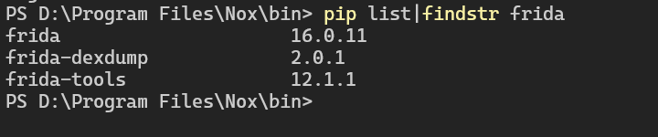
比如我这里是16.0.11。然后就去https://github.com/frida/frida/releases找到对应的服务端版本下载即可
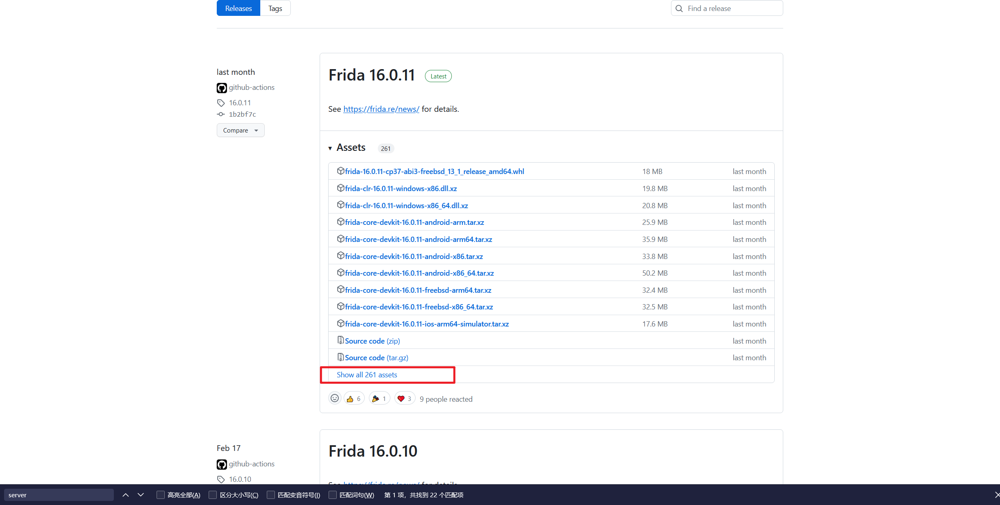
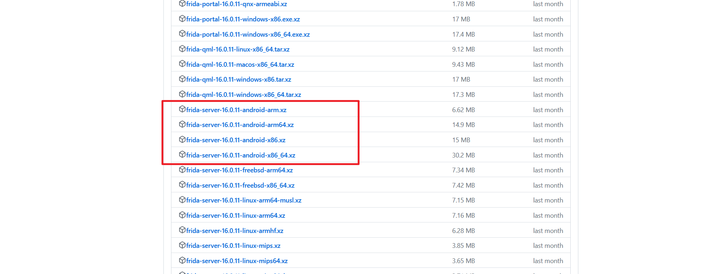
可以使用 adb shell getprop ro.product.cpu.abi 确定手机系统架构
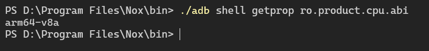
下载解压后，使用adb将frida-server放到手机目录/data/local/，然后修改属性为可执行
1 2 3 4 5 6 7 8 9 10 11 12 13 14 15 16 17 18 19 #查看设备连接状态 adb devices -l #把服务端推送到手机的指定目录（记得先解压再推送） adb push Downloads\frida-server-16.0.11-android-arm64 /sdcard/ #进入手机终端，修改文件权限并运行 adb shell # 获取root权限,移动frida服务端到/data/local/目录下 su cp /sdcard/frida-server-16.0.11-android-arm64 /data/local/ cd /data/local # 修改权限 chmod 777 frida-server-16.0.11-android-arm64 # 后台启动（方便退出shell） ./frida-server-16.0.11-android-arm64 &
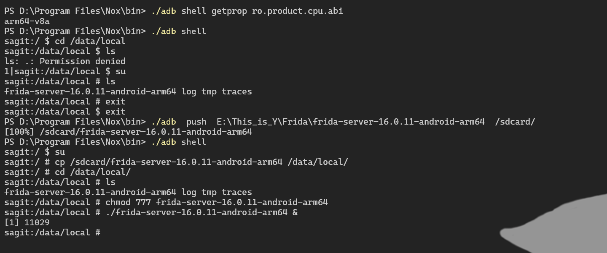
随后usb连接电脑与手机输入 frida-ps -Ua
有类似返回即可
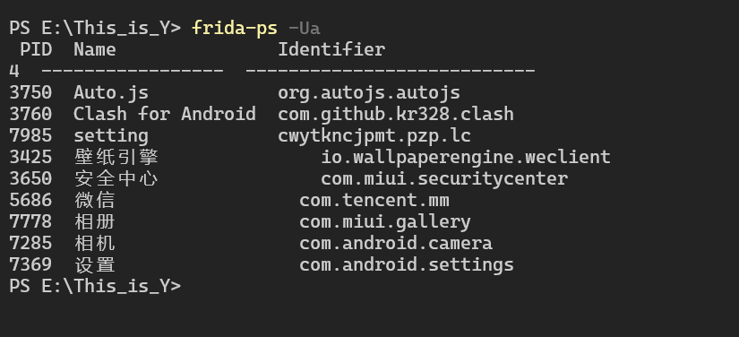
Objection pip install objection即可
Fiddler classic 下载：https://www.telerik.com
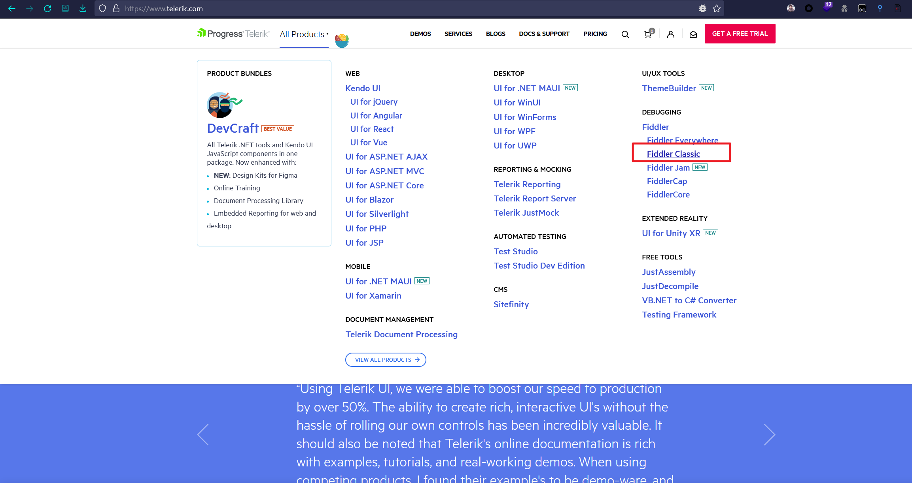
Fiddler Classic（经典版），这个版本是免费 的，不过只能在Windows上使用。
Fiddler Everywhere可以在所有平台使用，并且相当于Fiddler Classic+postman，但是是收费 的。
如果只作为抓包工具经典版就够用了，可以直接点击下方链接前往下载页面。
邮箱和地址随便填就行了
fiddler使用教程可以看：
https://juejin.cn/post/7021763777460699150
https://www.cnblogs.com/hong-fithing/p/7582947.html
证书 burp证书
获取证书
1 挂上代理后，访问 https://burp 下载证书，即 cacert.der。
将证书转换为移动设备用户凭据文件（Ubuntu 16.04）
1 2 3 4 5 6 7 root@cj :~ root@cj :~ 9a5ba575 root@cj :~
安装证书(手机已Root)
1 2 3 4 5 6 7 8 9 10 11 12 13 14 15 adb push 9a5ba575.0 /sdcard/ adb shell su mount -o rw,remount / mount -o rw,remount /system cp /sdcard/9a5ba575.0 /system/etc/security/cacerts/ chmod 644 /system/etc/security/cacerts/9a5ba575.0 reboot
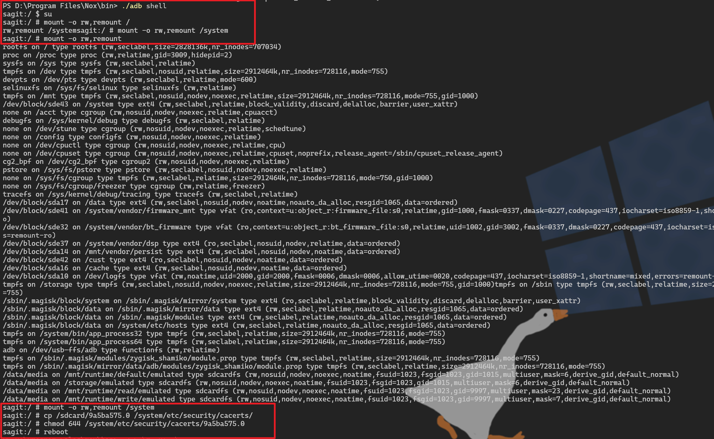
出现mount:’/dev/block/dm-3’->’/‘:I/0 error时，是由于安卓的保护机制，可以考虑如下解决办法
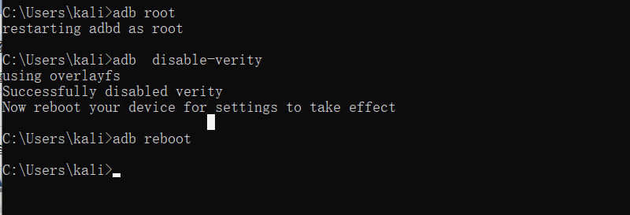
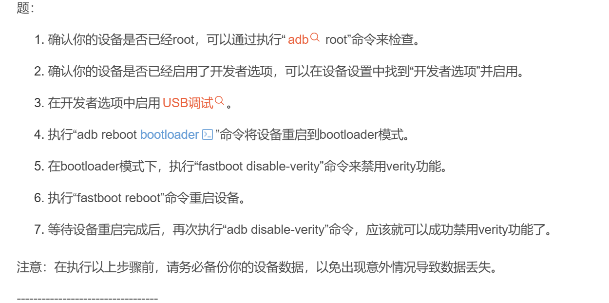
验证
1 设置->安全性和位置信息->加密与凭据->信任的凭据（显示信任的CA证书）->系统->PortSwigger
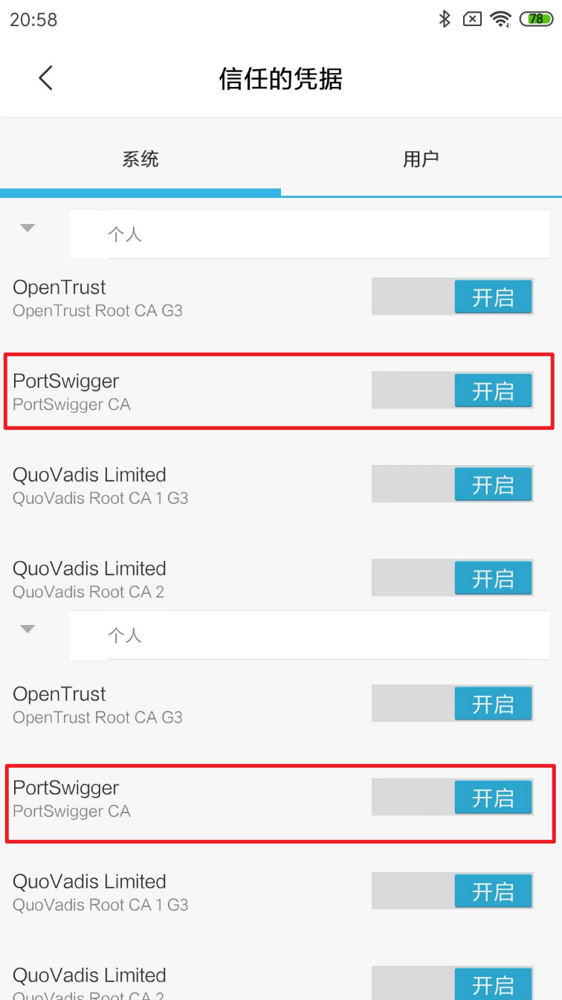
Fillder证书
获取证书
1 2 3 4 5 两种方式： 1 ) 挂上代理 http:2 ）Fiddler->Tools->Options->HTTPS->Actions->Export Root Certificate to Desktop,将 FiddlerRoot.cer证书导出至桌面。(如果Export Root Certificate to Desktop按钮是灰色的，需要点击下面的Decrypt HTTPS traffic)
将证书转换为移动设备用户凭据文件（Ubuntu 16.04）
1 2 3 4 root@cj :~ root@cj :~ 269953fb root@cj :~
安装证书(手机已Root)
1 2 3 4 5 6 7 8 9 adb push 269953fb.0 /sdcard/ adb shell su mount -o rw,remount / mount -o rw,remount /system cp /sdcard/269953fb.0 /system/etc/security/cacerts/ chmod 644 /system/etc/security/cacerts/269953fb.0 reboot
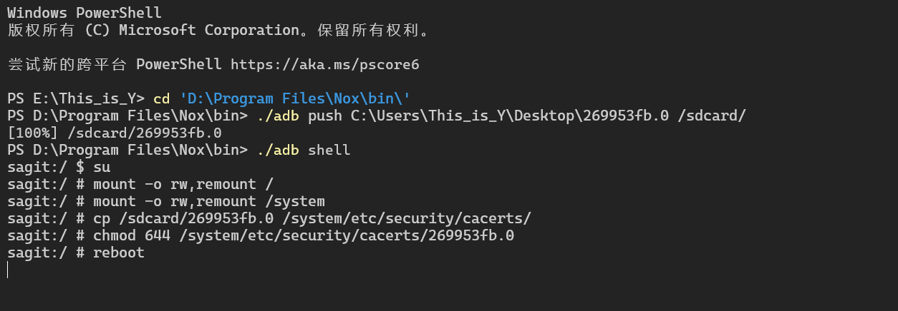
验证
1 设置->安全性和位置信息->加密与凭据->信任的凭据（显示信任的CA证书）->系统->DO_NOT_TRUST_FiddlerRoot
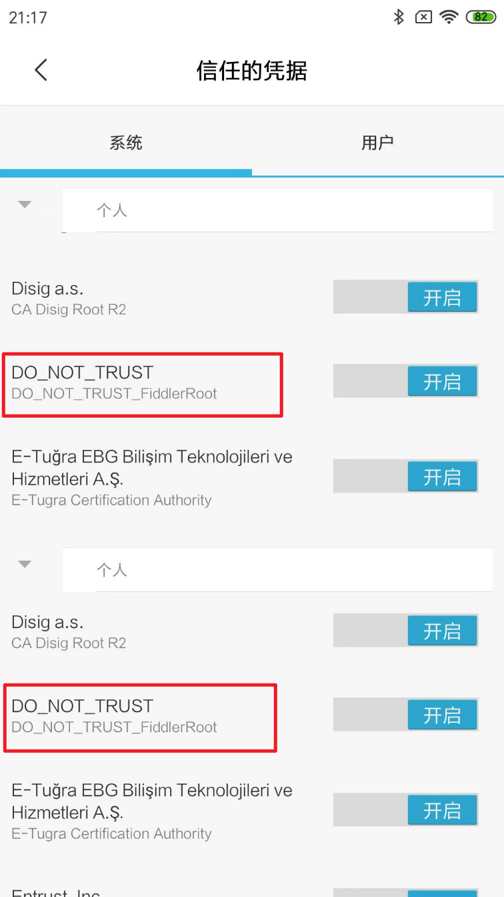
抓包配置
1 Fiddler->Tools->Connecttions->Allow remote computers to conect
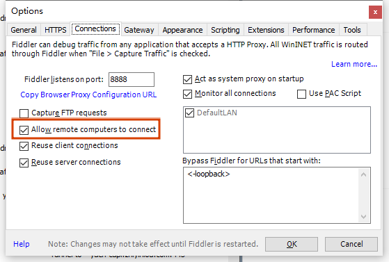
burp证书2 在安卓版本高于10的情况下，使用之前的方法添加证书，会在挂载这步卡住，如下图：
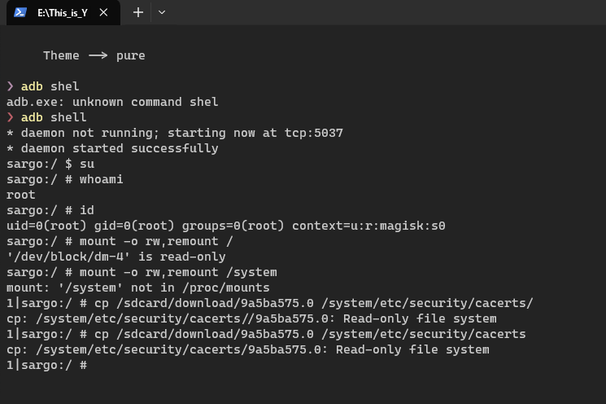
所以需要使用别的方法来添加证书。来源：https://blog.csdn.net/qq_42923605/article/details/126870645
原理很简单，就相当于刷模块来达到修改的目的。所以需要刷好了面具才行。
1.在/data/adb/modules/目录下随便找一个模块，这里我找的是shamiko模块，在里面创建一个system文件夹，然后在里面创建证书的那一层层路径，最后把证书丢进去。所以我这里证书完整路径为/data/adb/modules/zygisk_shamiko/system/etc/security/cacerts/
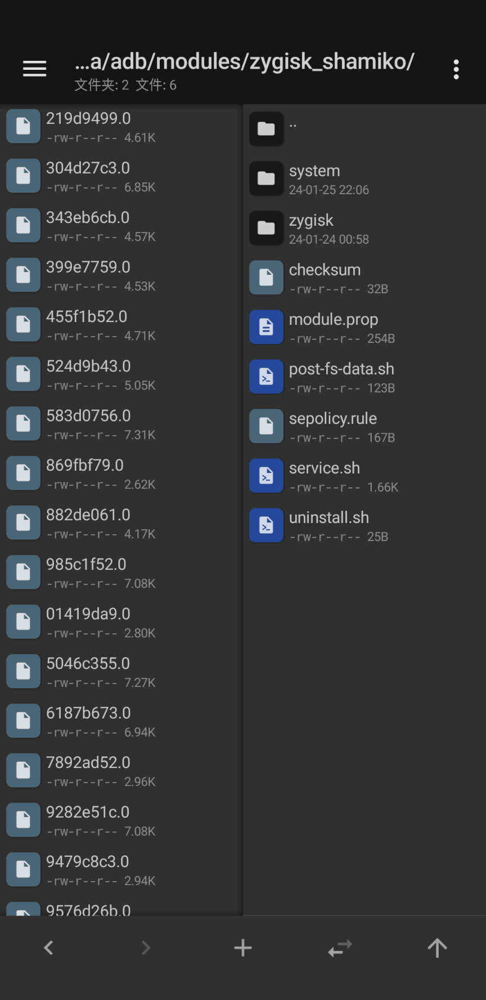
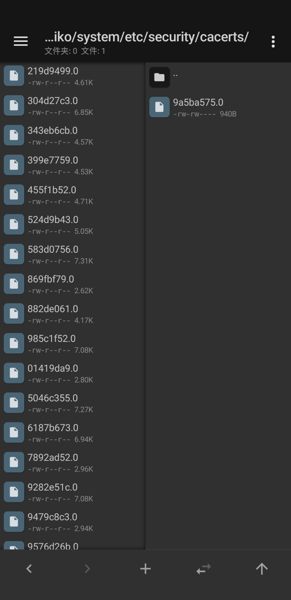
随后重启手机，就可以在/system/etc/security/cacerts/路径下看到证书了，系统设置中也可以看到PostSwigger了。
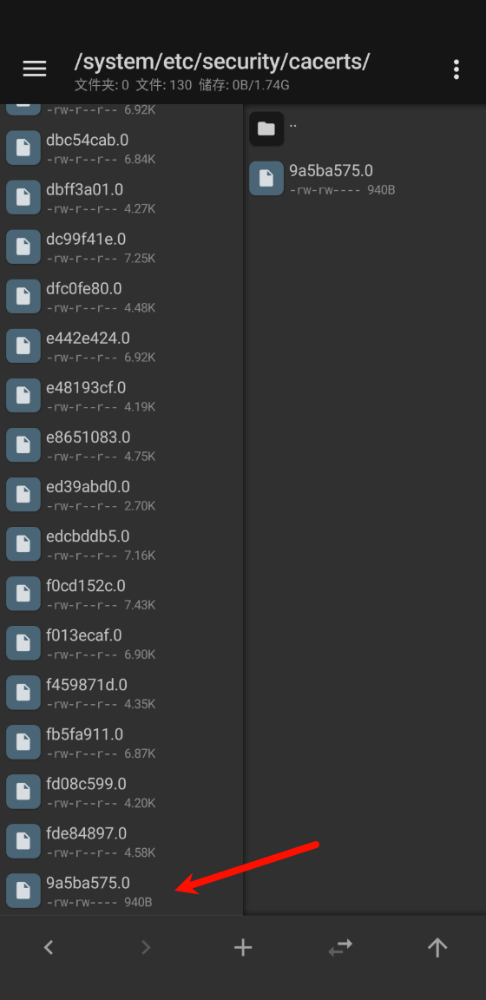
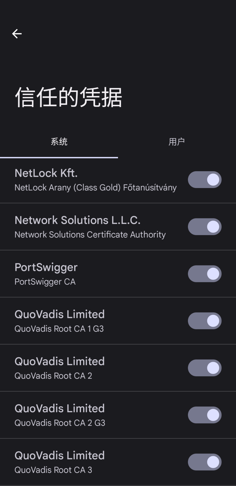
2024-1021更新 问题1：本地转发抓包 已弃用 把burp设置成系统代理后，抓到一个app的包，但是host地址是127.0.0.1:30000,很显然这不是我电脑上的，也不是一个远程地址，那就只能是手机上某个app开放的端口了
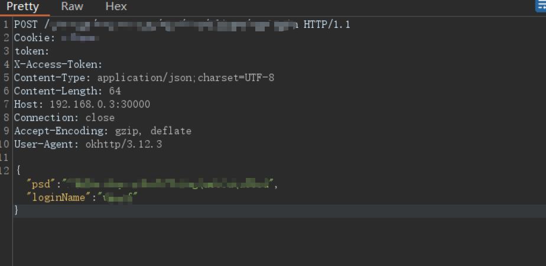
查看发现是app启动的端口：
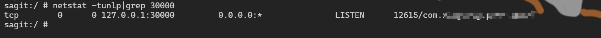
但是我在电脑上是访问不到这个端口的
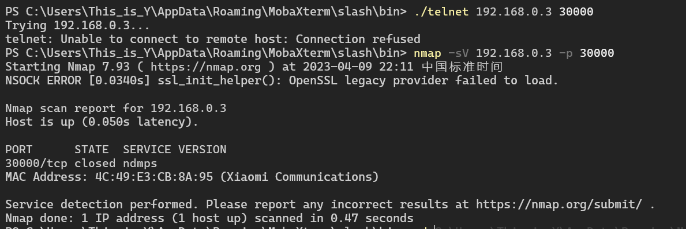
经过学长指导，决定用ssh转发获取返回包
termux安装ssh
1 2 3 4 5 6 7 8 9 10 11 12 13 14 15 16 17 18 # 换源 sed -i 's@^\(deb.*stable main\)$@#\1\ndeb https://mirrors.tuna.tsinghua.edu.cn/termux/termux-packages-24 stable main@' $PREFIX/etc/apt/sources.list sed -i 's@^\(deb.*games stable\)$@#\1\ndeb https://mirrors.tuna.tsinghua.edu.cn/termux/game-packages-24 games stable@' $PREFIX/etc/apt/sources.list.d/game.list sed -i 's@^\(deb.*science stable\)$@#\1\ndeb https://mirrors.tuna.tsinghua.edu.cn/termux/science-packages-24 science stable@' $PREFIX/etc/apt/sources.list.d/science.list # 更新 pkg update # 安装ssh pkg install openssh # 打开ssh sshd # 创建密码 passwd
手机上的ssh默认端口是8022，需要注意下，下图就是登录成功的界面
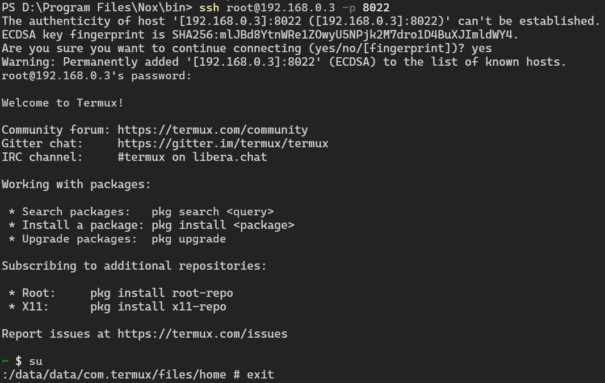
在测试可以登录后，就可以开始监听了
1 ssh -L 30000:127.0.0.1:30000 root@192.168.0.3 -p 8022
其中192.168.0.3是手机的ip地址，127.0.0.1:30000是转发的目的地址机器端口，30000是本地一个闲置端口（这个可以任意取，但是我为了方便，即让抓来的包不做任何修改就可以直接发送并获取返回包，就改成了这个）。
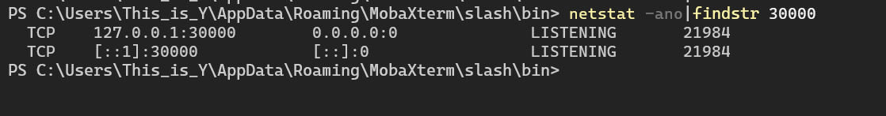
现在我在burp上抓到包后，直接send，就可以有返回包了
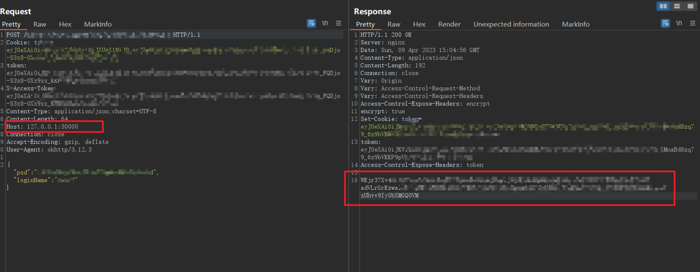
一键脚本(win/linux/macOS) 1 2 3 4 5 6 7 8 9 10 11 12 13 14 15 16 17 18 19 20 21 22 23 24 25 26 27 28 29 30 31 32 33 34 35 36 37 38 39 40 41 42 43 44 45 46 47 48 49 50 51 52 53 54 55 56 57 58 59 60 61 62 63 64 65 66 67 68 69 70 71 72 73 74 75 76 77 78 79 80 81 82 83 84 85 86 87 88 89 90 91 92 93 94 95 96 97 98 99 100 101 102 103 104 105 106 107 108 109 110 111 112 113 114 115 116 117 118 119 120 121 122 123 124 125 126 127 128 129 130 131 132 133 134 135 136 137 138 139 140 141 142 143 144 145 146 147 148 149 150 151 152 153 154 155 156 157 158 159 160 161 162 163 164 165 166 167 168 169 170 171 172 173 174 175 176 177 178 179 180 181 182 183 184 185 186 187 188 189 190 191 192 193 194 195 196 197 198 199 200 201 202 203 204 205 206 207 208 209 210 211 212 213 214 215 216 217 218 219 220 221 222 223 224 225 226 227 228 229 230 231 232 233 234 235 236 237 238 239 240 241 242 243 244 245 246 247 248 249 250 251 252 253 254 255 256 257 258 259 260 261 262 263 264 265 266 267 268 269 270 271 272 273 274 275 276 277 278 279 280 281 282 283 284 285 286 287 288 289 290 291 292 293 294 295 296 297 298 299 300 301 302 303 ''' Author: This_is_Y Date: 2025-04-02 10:56:49 LastEditTime: 2025-04-19 01:44:10 FilePath: /1000047/Users/nuvolebianche/Downloads/igw-forward-2.py Description: 脚本用于i国网测试时,管理 ADB 和端口转发，支持 Windows 和 macOS/Linux 平台。 ''' import subprocessimport osimport ctypesimport timeimport shutilimport resocat_processes = [] def get_local_ip_unix (): try : result = subprocess.run(["ifconfig" ], capture_output=True , text=True ) output = result.stdout ip_addresses = re.findall(r'inet (\d+\.\d+\.\d+\.\d+)' , output) for ip in ip_addresses: if ip.startswith('192.' ): return ip for ip in ip_addresses: if ip.startswith('172.' ): return ip for ip in ip_addresses: if ip.startswith('10.' ): return ip print (ip_addresses) print ("未找到符合条件的 IPv4 地址。" ) return None except Exception as e: print (f"执行 ifconfig 命令时出错: {e} " ) return None def get_local_ip_windows (): try : result = subprocess.run(["ipconfig" ], capture_output=True , text=True ) output = result.stdout ip_addresses = re.findall(r'\w+.*?(\d+\.\d+\.\d+\.\d+)' , output) for ip in ip_addresses: if ip.startswith('192.' ): return ip for ip in ip_addresses: if ip.startswith('172.' ): return ip for ip in ip_addresses: if ip.startswith('10.' ): return ip print (ip_addresses) print ("未找到符合条件的 IPv4 地址。" ) return None except Exception as e: print (f"执行 ipconfig 命令时出错: {e} " ) return None def check_command_exists (command ): """ 检查指定命令是否存在于系统中 :param command: 要检查的命令名称，例如 'socat' 或 'rinetd'(弃用) :return: True 表示命令存在，False 表示命令不存在 """ if shutil.which(command) is not None : print (f"{command} 已安装。" ) return True else : print (f"{command} 未安装，请先安装 {command} 。" ) exit(1 ) def get_os_type (): """ 判断操作系统类型 :return: 返回操作系统类型字符串 ('Windows', 'macOS', 'Linux', 'Unknown') """ platform = os.name if platform == 'nt' : return 'Windows' elif platform == 'posix' : if 'darwin' in os.uname().sysname.lower(): return 'macOS' else : return 'Linux' else : return 'Unknown' def is_admin_win (): """ 检查当前是否具有管理员权限 (仅适用于 Windows) :return: True 表示是管理员权限，False 表示不是 """ try : return ctypes.windll.shell32.IsUserAnAdmin() == 1 except : return False def check_adb_devices (): """ 检查是否有设备通过 ADB 连接 :return: 返回 True 表示有设备连接，False 表示没有设备连接 """ try : result = subprocess.run(["adb" , "devices" ], capture_output=True , text=True ) output = result.stdout.strip() if "List of devices attached" in output: devices = output.splitlines()[1 :] devices = [line for line in devices if line.strip()] if devices: print ("已连接的设备列表：" ) for device in devices: print (device) return True else : print ("没有检测到任何设备连接。" ) return False else : print ("无法解析 adb 输出，请确保 adb 已正确安装并配置。" ) return False except FileNotFoundError: print ("未找到 adb 命令，请确保已安装并将其添加到系统 PATH 中。" ) return False def adb_forward_port (local_port, device_port ): """ 使用 adb forward 转发本地端口到设备端口 :param local_port: 本地端口号 :param device_port: 设备端口号 """ try : cmd = ["adb" , "forward" , f"tcp:{local_port} " , f"tcp:{device_port} " ] result = subprocess.run(cmd, capture_output=True , text=True ) if result.returncode == 0 : print (f"成功将本地端口 {local_port} 转发到设备端口 {device_port} " ) else : print (f"端口转发失败: {result.stderr} " ) except FileNotFoundError: print ("未找到 adb 命令，请确保已安装并将其添加到系统 PATH 中。" ) def adb_forward_port_batch (start=30000 , end=30008 ): """ 批量执行 adb forward 命令，将本地端口转发到设备端口,默认30000-30008 :param start: 起始端口号 :param end: 结束端口号 """ for i in range (start, end + 1 ): adb_forward_port(i, i) def start_port_forwarding (): """ 启动 30000-30008 的端口转发 (适用于 macOS/Linux) """ global socat_processes for i in range (9 ): listen_port = 30000 + i target_port = 30000 + i cmd = [ "socat" , f"TCP-LISTEN:{listen_port} ,reuseaddr,fork" , f"TCP:127.0.0.1:{target_port} " ] process = subprocess.Popen(cmd, stdout=subprocess.PIPE, stderr=subprocess.PIPE) print (f"启动端口转发: {listen_port} -> 127.0.0.1:{target_port} pid: {process.pid} " ) socat_processes.append(process) print ("所有端口转发已启动。" ) def stop_port_forwarding (): """ 停止所有端口转发 """ global socat_processes print ("正在停止所有端口转发..." ) for process in socat_processes: try : process.terminate() process.wait(timeout=5 ) print (f"已停止进程 PID: {process.pid} " ) except subprocess.TimeoutExpired: process.kill() print (f"强制终止进程 PID: {process.pid} " ) socat_processes = [] print ("所有端口转发已停止。" ) def forward_win (): """ 在 Windows 平台上执行端口转发 """ if not is_admin_win(): print ("当前脚本未以管理员权限运行，请尝试以管理员权限重新启动..." ) exit(1 ) if not check_adb_devices(): exit(1 ) print ("清空 adb 的端口转发记录..." ) subprocess.run(["adb" , "forward" , "--remove-all" ]) print ("清空 netsh 的端口转发记录..." ) subprocess.run(["netsh" , "interface" , "portproxy" , "reset" ]) print ("启动 adb 端口转发..." ) adb_forward_port_batch() print ("\n启动 netsh 的端口转发..." ) for i in range (9 ): tcp_port = 30000 + i if i == 0 : ip = get_local_ip_windows() listenaddress = input (f"请输入当前设备ip(默认:{ip} ): " ) or ip cmd = [ "netsh" , "interface" , "portproxy" , "add" , "v4tov4" , f"listenport={tcp_port} " , f"listenaddress={listenaddress} " , f"connectport={tcp_port} " , "connectaddress=127.0.0.1" ] result = subprocess.run(cmd, capture_output=True , text=True ) if result.returncode == 0 : pass else : print (f"添加端口转发失败: {result.stderr} " ) subprocess.run(["netsh" , "interface" , "portproxy" , "show" , "all" ]) def forward_mac (): """ 在 macOS/Linux 平台上执行端口转发 """ check_command_exists("socat" ) if not check_adb_devices(): exit(1 ) print ("清空 adb 的端口转发记录..." ) subprocess.run(["adb" , "forward" , "--remove-all" ]) print ("\n启动 adb 端口转发..." ) adb_forward_port_batch() print ("\n启动 socat 的端口转发..." ) try : start_port_forwarding() print ("按 Ctrl+C 停止端口转发..." ) while True : time.sleep(1 ) except KeyboardInterrupt: stop_port_forwarding() print ("程序已退出。" ) if __name__ == '__main__' : check_command_exists("adb" ) os_type = get_os_type() if os_type == 'Windows' : forward_win() elif os_type in ['macOS' , 'Linux' ]: forward_mac() else : print ("不支持的操作系统。" )
问题2：wsl2使用adb 在wsl2中连接不到手机，需要用到ip连接（需要在同一个局域网下），具体为以下几步
物理机中先插上数据线，adb连接好，然后输入 adb tcpip 5555
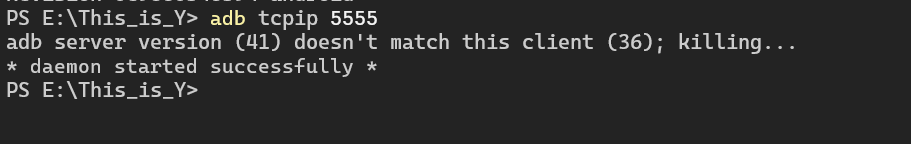
拔下数据线，来到wsl2中，确保可以ping通手机，输入 adb connect 192.168.0.3 。（后面的ip是手机ip）
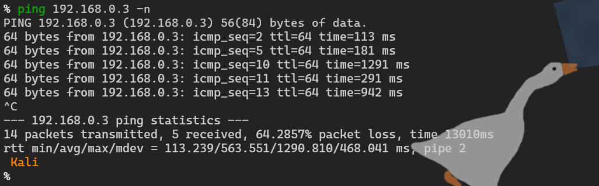
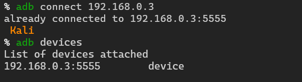
fine
问题3：无数据线连接adb 需要设置中打开无线调试
root权限下运行
1 2 3 4 5 6 7 su setprop service.adb.tcp.port 5555 stop adbd start adbd ifconfig|grep inet
然后电脑使用adb connect 设备ip:5555
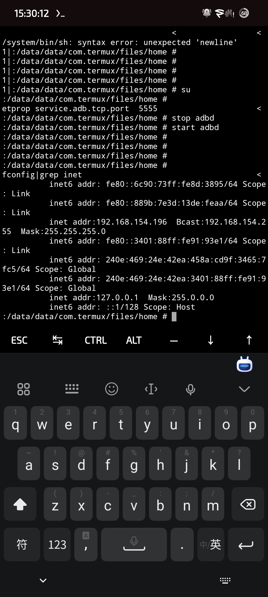
参考： app抓包：https://mp.weixin.qq.com/s/xDvxKJPdqf7AfJSfuWHZ0g https://zhuanlan.zhihu.com/p/506203078 https://www.cnblogs.com/cijian9000/p/13431754.html https://www.cnblogs.com/tjp40922/p/11353808.html https://juejin.cn/post/7021763777460699150 https://www.sqlsec.com/2018/05/termux.html https://zhuanlan.zhihu.com/p/148825449